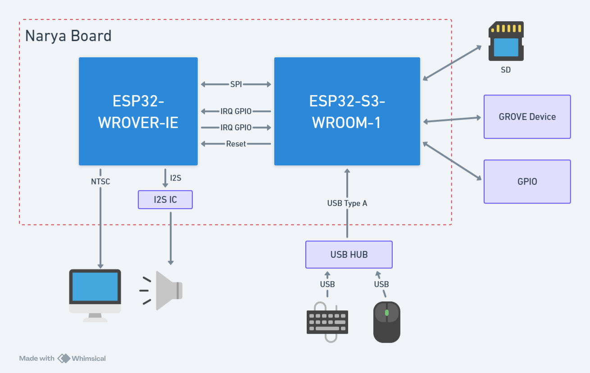
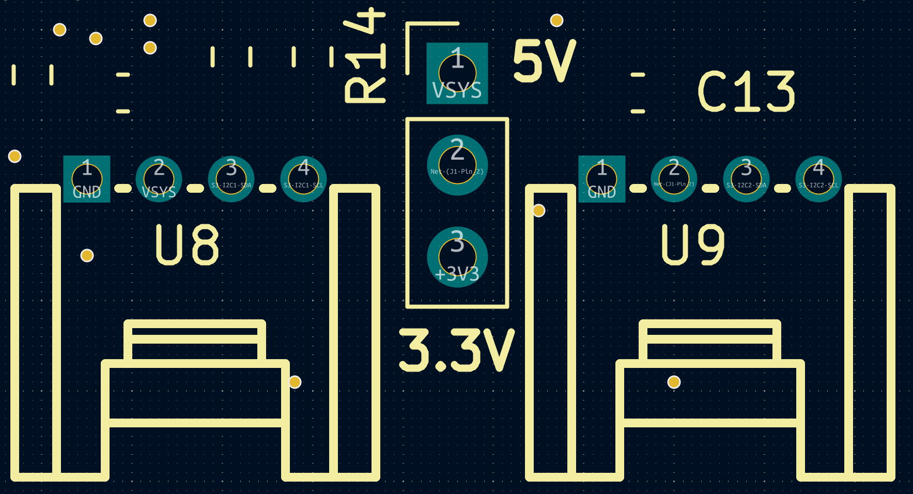
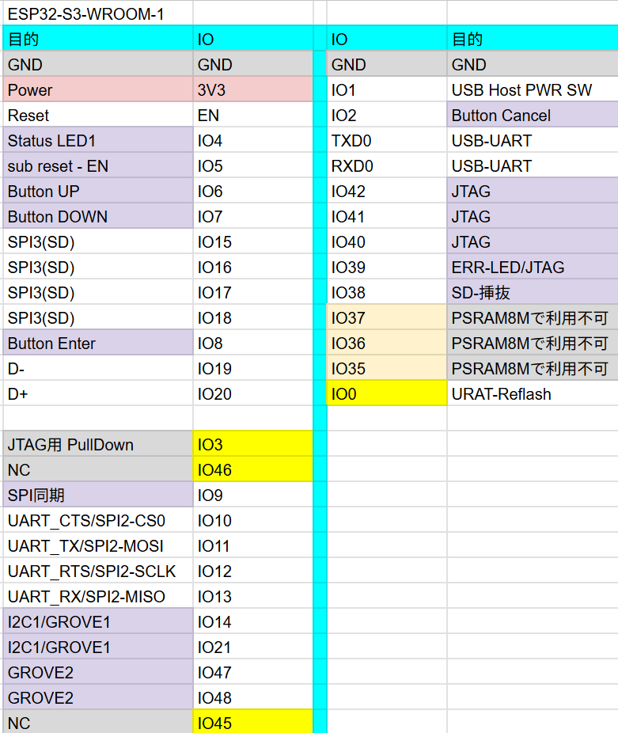
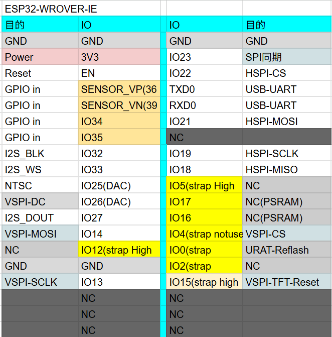
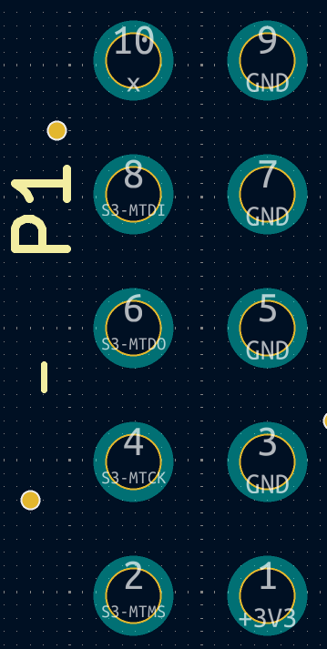
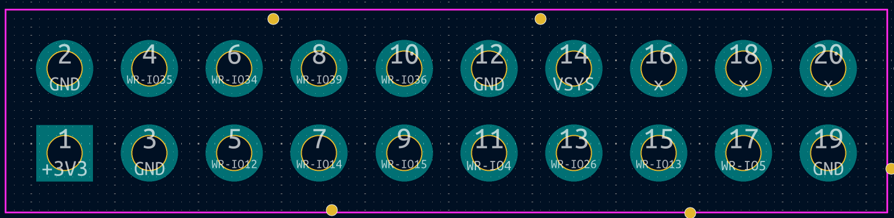

Hardware¶
Connectors and pin assignments for both machines. If you are choosing between them, start at Choose your hardware.
Modern (M5Stack Tab5)¶
Modern runs on a stock M5Stack Tab5. Everything below is the Tab5's own hardware — Family mruby only decides what it uses and what it reserves. For the full board specification, connector locations and mechanical drawings, see M5Stack's documentation.
Overview (Modern)¶
| Item | Details |
|---|---|
| Main MCU | ESP32-P4 (dual-core RISC-V) — OS, graphics, audio and input, all on one chip |
| Radio | ESP32-C6 coprocessor. Wi-Fi and BLE run at the same time |
| Memory | 32 MB PSRAM, 16 MB flash |
| Display | Built-in IPS panel, 1280 x 720, MIPI-DSI, with capacitive touch |
| Framebuffer | 426 x 240 in RGB332, scaled 3x onto the panel by the P4's PPA hardware |
| Audio | Built-in speaker and headphone jack. The speaker mutes when headphones are plugged in |
| USB | USB-A host port (keyboard, mouse, hub) and USB-C for power and flashing |
| Expansion | 1x GROVE |
| Clock | RX8130 RTC on the internal I2C bus |
Video (Modern)¶
There is no video connector: the panel is the output. The system draws into a 426 x 240 RGB332 framebuffer and the P4's PPA block scales and rotates it onto the 1280 x 720 panel, so the picture fills the screen without the CPU touching every pixel.
Unlike the NTSC output on Retro, nothing is hidden by overscan, so the margin settings
(display_margin_x / display_margin_y) are 0 on this machine.
Audio (Modern)¶
The same NES-style APU that Retro uses, but synthesised on the P4 itself and played through the built-in codec. Plugging in headphones mutes the speaker; the detection runs over the display I2C bus.
See FmrbAudio and Audio File Formats.
GROVE (Modern)¶
One GROVE port, on GPIO53 (SDA side) and GPIO54 (SCL side).
The port is dual-purpose, the same convention as GROVE 2 on Retro: it is either an I2C bus or a serial MIDI output, whichever your app opens first. The pin manager arbitrates.
| Signal | GPIO | Also used as |
|---|---|---|
| Sig1 / SDA | 53 | MIDI TX |
| Sig2 / SCL | 54 | WS2812B data, in the LED matrix demo |
Pins the system keeps (Modern)¶
Your app cannot acquire these:
| GPIO | Reserved for |
|---|---|
| 0 / 1 | Tab5 Keyboard, I2C (STM32F030 at address 0x6D) |
| 50 | Tab5 Keyboard interrupt |
| 31 / 32 | Body touch panel I2C, also the general-purpose I2C1 bus |
| 23 | Touch panel interrupt |
| 22 | LCD backlight |
| 24 / 25 | USB-Serial-JTAG — the USB-C flash and console link |
The USB-A host port sits on the high-speed OTG PHY's dedicated pads, outside the GPIO matrix, so it takes no GPIO of its own.
Storage (Modern)¶
Internal flash only for now (16 MB, LittleFS). The Tab5's microSD slot is not wired up in the firmware yet.
Retro (narya-board)¶
Specifications for the connectors and pin assignments of the narya-board.
Note
For schematics, KiCAD design files, and board photos, see the narya-board repository.
Overview¶
| Item | Details |
|---|---|
| Main MCU (fmrb-core) | ESP32-S3-WROOM-1-N16R8 (16MB Flash + 8MB PSRAM) |
| Sub MCU (fmrb-graphics-audio) | ESP32-WROVER-E/IE (with PSRAM) |
| Inter-MCU Communication | UART1 (921600 bps, CTS/RTS flow control) |
| Video Output | NTSC composite (using LovyanGFX CVBS) |
| Audio Output | I2S DAC (NES APU emulator) |
| Storage | Internal LittleFS (16MB) + SD card (FAT32, SPI connection) |

Power Supply¶
| Item | Value |
|---|---|
| Input | USB Type-C (5V) |
| Internal Regulator | 3.3V |
| Recommended Power | Stable USB supply of 1A or more |
Video Output¶
| Item | Value |
|---|---|
| Connector | RCA (pin jack, yellow) |
| Signal Format | NTSC composite |
| Standard Resolution | 320 x 240 |
| Color | RGB332 (256 colors) |
If colors appear different due to variations in CRT monitors or capture devices, you can adjust them using FmrbGfx#set_output_level / set_chroma_level.
Audio Output¶
| Item | Value |
|---|---|
| Connector | 3.5mm stereo mini jack |
| Signal | I2S to DAC analog output |
| Output Level | Line-level equivalent |
The NES APU emulator runs with 4 channels: 2 square waves + 1 triangle wave + 1 noise channel. See FmrbAudio and Audio File Formats for details.
GROVE¶
The board has 2 GROVE connectors. Listed from left: GND, Power, Sig1, Sig2. The connections are as follows:
| Connector | Sig1 | Sig2 | Notes |
|---|---|---|---|
| GROVE 1 | GPIO 14/I2C1-SDA | GPIO 21/I2C1-SCL | For I2C / shared with RTC (RX8900, address: 0x32). 10K pull-up resistors present |
| GROVE 2 | GPIO 47 | GPIO 48 | General purpose. No pull-up resistors. Power source selectable |
GROVE 1 shares the I2C bus with the RTC, so be careful about address conflicts.
GROVE 2 has no pull-up resistors on the signal lines, and the power supply method can be changed via pin headers, so it can be used freely for GPIO, UART, RMT, and other purposes.

Pin Assignments¶
ESP32-S3 Pin Assignment¶

GPIO40 is connected to the INT pin of the RX8900 with a pull-up resistor.
JTAG functionality has not been verified. If you want to use it, you need to remove the 0-ohm resistor. See the schematics for details.
ESP32-WROVER Pin Assignment¶

I2C¶
| Bus | SDA | SCL | Notes |
|---|---|---|---|
| I2C1 | GPIO 14 | GPIO 21 | Shared with RTC (RX8900) |
| I2C2 | GPIO 47 | GPIO 48 | General purpose |
Use with I2C.new(unit: "ESP32_I2C0", ...) etc. (see Hardware Control > I2C).
External GPIO¶
Pin Locations (S3)

Pin Locations (WROVER)

RTC (Real-Time Clock)¶
The board includes an RX8900 RTC IC (I2C address 0x32, via I2C1). Time is maintained by a battery.
i2c = I2C.new(unit: "ESP32_I2C0")
rtc = RX8900.new(i2c)
rtc.sync_system_clock
See RX8900 API for details.
Related¶
- Check before using pins: FmrbHw
- Peripheral API: Hardware Control
- From boot to your first app: Setup and Connection